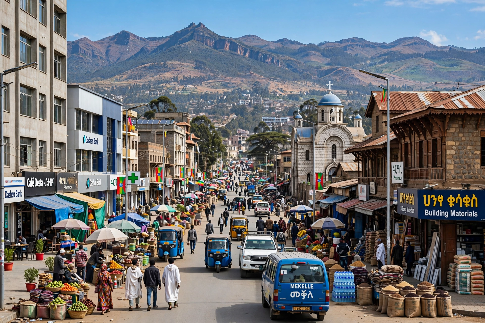

Mekelle (Tigrinya: መቐለ) is the capital city of the Tigray Region of Ethiopia. It is the second-largest city in Ethiopia after Addis Ababa, situated about 780 km north of the capital.

| Mekelle | |
|---|---|
| Country | Ethiopia |
| Region | Tigray |
| Elevation | 2,254 m |
| Population (2023 est.) | ~525,000 |
Mekelle grew in the 19th century when Emperor Yohannes IV made it his capital. Italian forces occupied it during the First and Second Italo-Ethiopian Wars. The city was a focal point during the Tigray War (2020–2022).
Located in the Ethiopian Highlands, Mekelle has a semi-arid climate with a rainy season from June to September.
Home to Mekelle University, Alula Aba Nega Airport, cement and textile industries, and the Martyrs' Memorial Monument.